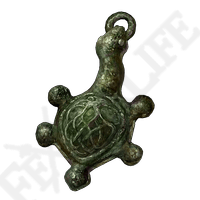
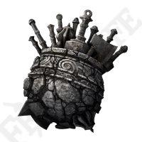
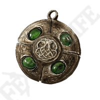
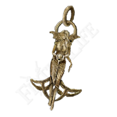

A General purpose melee build allowing you to be a jack of all trades but master of none. Whilst not as overpowered as the other builds, it can still be very effective and allow for a flexible approach to the game. The fact it will allow you to use the majority of weapons makes it highly recommended for a fun, varied and most of all balanced first playthrough.
This is a rough outline of the stats you should be aiming for.
Treat this is a general guide and not a rigid ruleset, which means do not be afraid to deviate if you say find a cool magic sword and need some INT, or find yourself suddenly wanting to become a strength powerhouse! Do what you enjoy.
Strength
Increasing your strength will increase your damage. Your target strength is level 60.
Dexterity
Increasing your dexterity will increase your damage. Your target dexterity is level 60.
Vigor
This is your health, the higher the better. Vigor should be anywhere from level 35 to level 60.
Endurance
Endurance effects the amount of stamina you have and how much armor you can equip. Endurance can be anywhere from level 25 to level 60.
Mind
Mind is how much FP or mana you have, allowing you to use more weapon abilities. Base level is fine but if you find yourself using a lot of weapon arts do not be afraid to invest.

Green turtle talisman
This will massively increase your stamina regen, very useful for melee fighters.

Great Jars Arsenal
This massively increases your equip load allowing you to equip heavier armour with less endurance investment.

Viridian amber medallion
This will massively increase your total stamina allowing you to attack or sprint for much longer. Very powerful when used with the green turtle

Erdtrees favor
This will give a small boost to maximum stamina, HP and equip load allowing your character to be just a little more powerful.